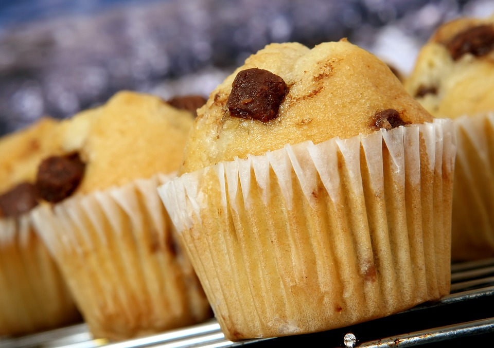

HELLO AND WELCOME!
My name's Eric. Thanks for visiting! Allow me to showcase my grant-driven research on the most delectable type of pie.

Strawberry pie is a solid go-to pie. No questions there. But is it the greatest pie? Not even close. According to an anonymous guy on Yahoo Answers, strawberry pie is "disgusting." I don't know that many pie aficionados would hold that opinion, but most would agree strawberry pie is certainly not the cream of the pie crop. A 90-year-old mother from Tallahassee was reported to have major issues with making a comparable strawberry pie using her apple pie recipe. If a 90-year-old baking master can't make a decent strawberry pie, then there can't possibly be hope for the rest of us to try.

Apple pie is better than strawberry pie. I like apple pie; it inexplicably feels healthier than all those other butter-frosted crust hunks. And it makes for a fantastic hurried breakfast. But I have to deny it the crown. Apple pie has allegedly caused a reporter from the East Bay Times to question his stance on racism, noting that he "may not like Americans" anymore. Except apple pie isn't even American, which demolishes my previous argument but also builds a glorious new one based on the fact that anything un-American is frowned upon by the stylish ghost of Abraham Lincoln. This includes apple pie.

I love pumpkin pie. I do. Top it with whipped cream and it's a perfect Thanksgiving after-meal delight. The only problem with my opinion is that BuzzFeed reporters disagree with it. Stephen LaConte, writer of peer-reviewed articles "Why Do Your Dog's Feet Always Smell Like Fritos?" and "Lisa Kudrow Revealed Why She Can't Watch 'Friends' And I Am VERY Upset", writes in his article "Pumpkin Pie Is Actually The Worst Kind Of Pie And I'm Tired Of Pretending Like It's Not" that pumpkin pie is actually the worst kind of pie and he's tired of pretending like it's not. BuzzFeed has spoken, and pumpkin pie must be disqualified from holding the title.

Black raspberry pie is the best. No questions about it. It's a fact that my opinion is that black raspberry pie is the tastiest of them all, and the facts don't lie, even if they're about one's opinion. A lady named Kat once said, "There’s nothing better than ... a slice of warm blackberry pie with a scoop of ice cream." She deserves a Nobel pie prize, because she's right! Just look at the pie. Just look at it in its five-star Amish-baked glory. It's so good. So delectable. So glorious. Abraham Lincoln would be proud of black raspberry pie from beyond the grave. My exhaustive research would agree that it certainly deserves the honor.
|  |
TERRIFICGreat, you made it! If you're interested in more than delicious pies, there are a few links at the top of the page just for you. If you want to sit and chat for a while, I can tell you about my interests. I enjoy racquetball, smooth jazz, and raspberry tea. I also do web development with occasional stock photos of muffins. If you want to get in touch, there are links up there and down there somewhere that'll take you where you need to be. |